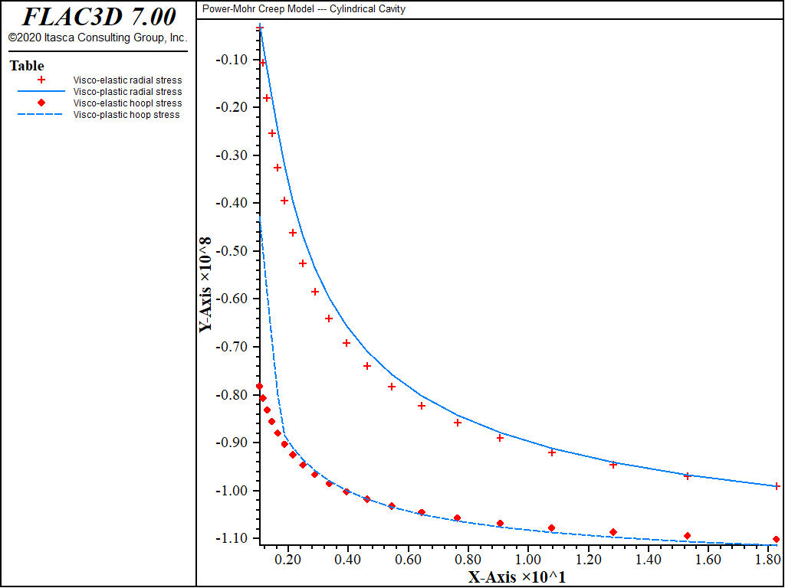
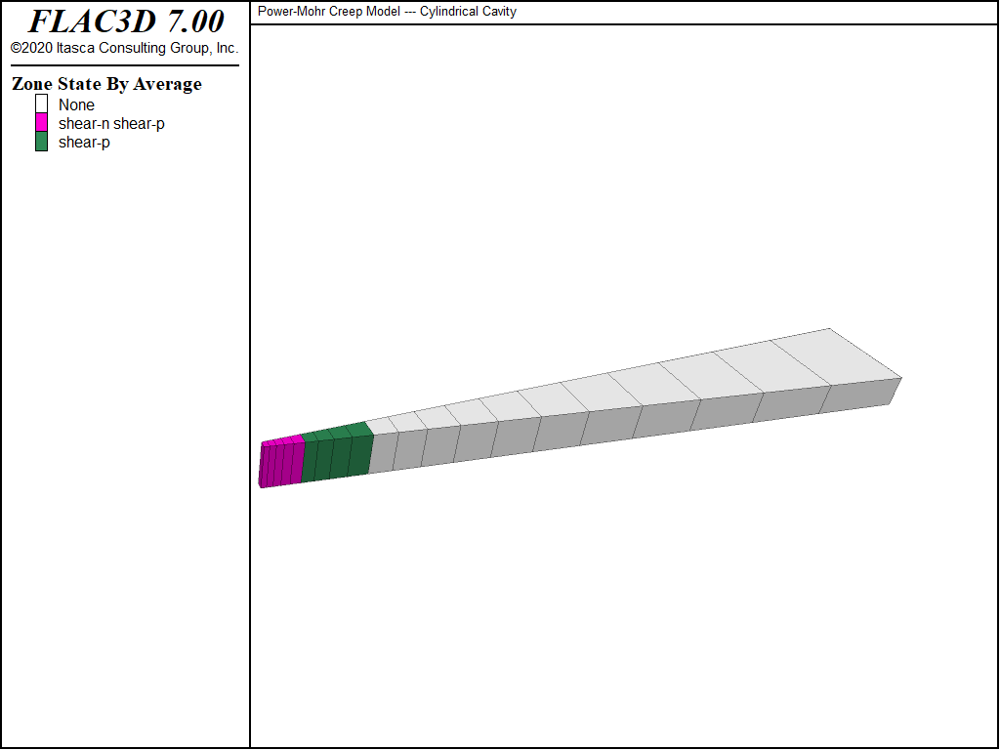

Power-Mohr 模型：圆柱空腔
注意
要在 FLAC3D 中查看此项目，请使用菜单命令 。 选择“Creep/ CylindricalCavityPowerMohr”并选择“CylindricalCavityPowerMohr.f3dprj”以加载。 该项目的主数据文件见本示例末尾（main data files）。
本例再次分析了幂律模型：圆柱空腔（Power Model: Cylindrical Cavity）中提出的无限长厚壁圆柱径向蠕变问题， 这次考虑粘塑性材料。材料粘性行为由 单分量幂律描述，塑性行为由 Mohr-Coulomb 屈服准则描述。材料的塑性 特性为相关联的，黏聚力为 15 MPa，摩擦角为 15 度。 将稳态解与服从相同粘性定律的粘弹性材料的解析解进行比较 （见 幂律模型：圆柱空腔（Power Model: Cylindrical Cavity））。
模型几何、材料特性以及初始和边界条件与 幂律模型：圆柱空腔（Power Model: Cylindrical Cavity）中所用的相同。数值模拟分 三个阶段进行。第一阶段将黏聚力设为很高的值，并将模型运行到弹性 平衡。第二阶段给网格单元赋予黏聚力、摩擦角和剪胀角的实际值， 并计算新的平衡状态。在进行蠕变计算（阶段 3）之前将速度重置为零。
粘弹性解析解由 FISH 函数 幂律圆柱（powcyl）给出，该函数包含在 项目中。模拟结束时径向应力和环向应力及塑性状态的结果 示于 图 1（Figure 1） 和 图 2（Figure 2）。从图中可以看出，内部空腔周围的区域 发生屈服，塑性的影响表现为塑性区内环向应力 大小的降低。


图 1：稳态时径向应力和环向应力——粘塑性解（线）与粘弹性解（符号）的比较。


图 2：稳态时的塑性状态。
数据文件
;------------------------------------------------------------
; 圆柱形空腔——power-mohr 模型
;-------------------------------------------------------------------
model new
model large-strain off
fish automatic-create off
model title "Power-Mohr Creep Model --- Cylindrical Cavity"
model configure creep
;
zone create brick point 0 1 0 0 point 1 20 0 0 ...
point 3 0.98769 0.15643 0 point 6 19.754 3.129 0 ...
point 2 1 0 -1 point 4 20 0 -1 ...
point 5 0.98769 0.15643 -1 point 7 19.754 3.129 -1 ...
size 20 1 1 ratio 1.2 1 1
zone face skin
zone cmodel power-mohr
; 属性和应力采用帕斯卡单位（非 MPa）
zone property bulk=1e9 shear=3e8
zone property constant-1=1e-25 exponent-1=3
zone property cohesion 1e15 tension 1e15
;
zone gridpoint fix velocity-y range position-y 0
zone gridpoint fix velocity-z range position-y 0
zone face apply velocity-normal 0 range group 'North'
zone face apply velocity-dip 0 range group 'North'
zone face apply stress-normal -100e6 range group 'East'
zone initialize stress xx -100e6 yy -100e6 zz -100e6
;
model save 'cyl_pmini'
model step 2000
model save 'cyl_pm0'
zone property cohesion 1.5e7 friction 15 dilation 15 tension 1e15
model step 2000
model save 'cyl_pm1'
;
model history mechanical unbalanced-maximum
zone history velocity-x gridpointid 1
zone history velocity-x gridpointid 81
zone history displacement-x gridpointid 1
zone history displacement-x gridpointid 81
zone history stress-xx gridpointid 1
zone history stress-yy gridpointid 1
zone history stress-zz gridpointid 1
model history creep time-total
model history timestep
;
zone gridpoint initialize velocity (0,0,0)
model creep active on
model creep timestep starting 1.0e-5
model creep timestep minimum 1.0e-5
model creep timestep maximum 1.0
model solve time-total 4000
model save 'cyl_pm2'
; 与解析解比较……
program call 'solution' suppress
table '1' label 'Flac3d x-velocity'
table '11' label 'Analytical x-velocity'
table '2' label 'Flac3d radial stress'
table '12' label 'Analytical radial stress'
table '3' label 'Flac3d hoop stress'
table '13' label 'Analytical hoop stress'
table '4' label 'Flac3d out-of-plane stress'
table '14' label 'Analytical out-of-plane stress'
model save 'cylindrical-cavity-powermohr'
| 这些内容对您有帮助吗？… | FLAC3D © 2019, Itasca | 原文更新于 2020 年 10 月 8 日 |